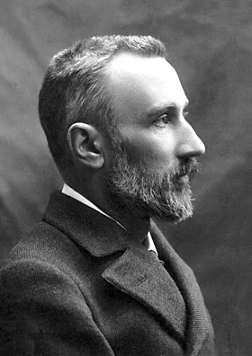
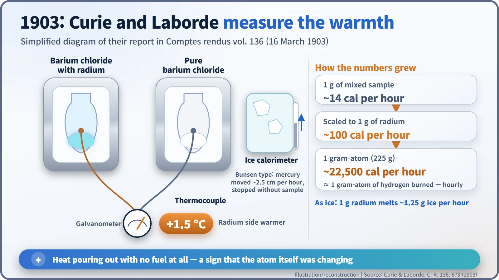
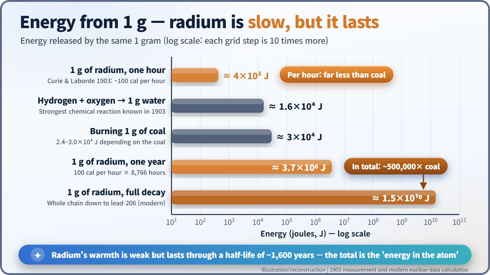
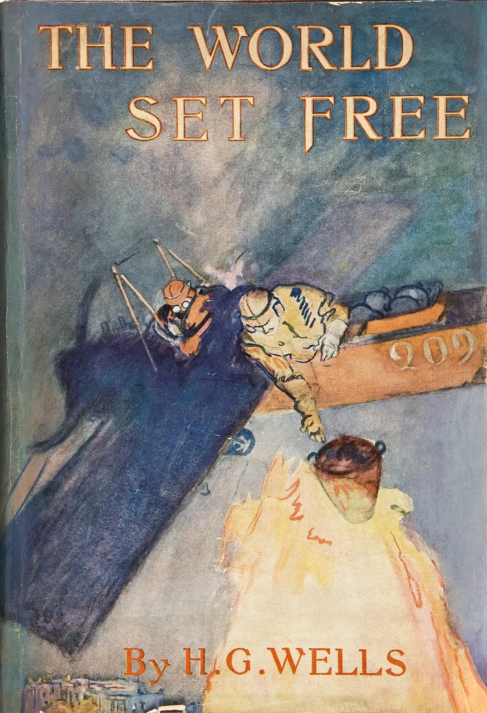

Nuclear History · 013
The Hand Warmer That Never Cooled — Curie, Laborde and the Heat of Radium (1903)
A radium salt that stayed 1.5 °C warmer than its surroundings, year after year, forced physicists to ask where its energy came from.
On 16 March 1903, Pierre Curie and Albert Laborde reported that radium salts stay about 1.5 °C warmer than their surroundings and release heat without stopping: roughly 100 calories per gram of radium every hour. Two months later Rutherford and Soddy argued that the energy hidden inside atoms must be thousands to a million times greater than any chemical energy. A lukewarm powder had launched the idea of atomic energy.
The hand warmer that never cooled
Tear open a disposable hand warmer on a cold morning and it glows warm for a few hours, then goes cold. Inside, iron powder is rusting, and once the iron has all rusted, the show is over. In Paris in 1903, though, there was a "hand warmer" that had shown no sign of cooling for years. Nobody had fuelled it or lit it, yet this little heap of white salt was always a touch warmer than its surroundings. It was a radium salt.
A glowing powder and an awkward question
Radium had been discovered at the end of 1898 by Marie and Pierre Curie, who extracted it from uranium ore. The hard-won radium compounds glowed with a faint bluish light in the dark.
That raised an uncomfortable question. One of the firmest rules in physics says energy cannot appear from nowhere. If radium kept giving off light and radiation, where was the energy coming from? The first people to put a number on it were Pierre Curie (1859–1906) and his young collaborator Albert Laborde (1878–1968). [5]

One and a half degrees, and 100 calories
On 16 March 1903 a short paper by the two men appeared in the Comptes rendus, the proceedings of the French Academy of Sciences. Its opening line (our translation from the French) reads: "We have found that radium salts release heat continuously." [1]
The experiment was simple and clever. They put barium chloride containing radium in one glass ampoule and pure barium chloride in another, and linked them with a thermocouple, two different metal wires joined so that a temperature difference becomes a small electric signal. The radium side was 1.5 °C warmer. Two ampoules of pure salt showed almost no difference, so this was no fluke.
To measure the amount of heat, they compared it with a thin platinum wire warmed by a known electric current, and they used a Bunsen ice calorimeter, which measures heat by how much ice melts. With the radium sample inside, the reading crept steadily along; take the sample out, and it stopped.
One gram of their mixed sample gave about 14 calories per hour. Scaling by the amount of radium it contained, they concluded that "1 g of radium releases a quantity of heat of the order of 100 small calories per hour" (our translation). In everyday terms, that is enough to melt a little more than its own weight of ice every hour, about 1.25 g. [1]

Does 100 calories sound modest? Their paper did the sum. A gram-atom of radium (225 g by the atomic weight used then) would give about 22,500 calories per hour, roughly the heat from burning the same amount of hydrogen. The difference is that hydrogen burns once and is gone, while radium was doing it every hour, year after year, with no visible change in itself.
The pair were careful. They left two explanations open: "a modification of the radium atom itself", or radium soaking up "an external energy of unknown nature" (our translations). [1]
"The energy latent in the atom must be enormous"
Two months later, in May 1903, Ernest Rutherford (1871–1937) and Frederick Soddy (1877–1956) at McGill University in Montreal published "Radioactive Change". They saw radioactivity as atoms turning into other atoms. Comparing the energy released as a gram of radium changes with the most energetic chemical reaction known, the union of hydrogen and oxygen, they wrote that "the energy of radioactive change must therefore be at least twenty-thousand times, and may be a million times, as great as the energy of any molecular change." [2]
Their conclusion still reads like a forecast: "the energy latent in the atom must be enormous compared with that rendered free in ordinary chemical change." They added that "atomic energy in general" was probably of a similar high order in all elements, and that it might even explain how the Sun keeps shining. [2]
Checking the sums with modern numbers
Today we know the heat comes from atomic nuclei settling into more stable states. Radium-226 has a half-life (the time for half of it to decay) of about 1,600 years, so its output is feeble per hour but lasts a very long time.

The heat from a gram of radium in one hour (about 400 J) is roughly a seventieth of what you get by burning a gram of coal (about 30,000 J). But over a year it adds up to about 3.7 million J, more than 100 times the coal. Let the gram decay all the way to lead and the total is about 15 billion J (1.5×1010 J), some 500,000 times the coal and close to a million times the hydrogen reaction. Rutherford and Soddy's estimate was remarkably good.
Two caveats. Some popular reports at the time treated radium as an everlasting fuel; that was an exaggeration, because the heat is finite and slowly fades. And in 1903 nobody knew where the energy really came from. E=mc² arrived in 1905, and the atomic nucleus was not discovered until 1911.
A novelist's vision, a scientist's warning
The idea soon escaped the laboratory. Soddy turned his public lectures into a popular book, The Interpretation of Radium (1909). H. G. Wells (1866–1946) dedicated his 1914 novel The World Set Free to it, admitting that the story "owes long passages to the eleventh chapter of that book". The novel features "atomic bombs" that destroy cities. [4]

Pierre Curie saw both sides too. In his Nobel lecture in Stockholm on 6 June 1905 (delivered in French; quoted here from the Nobel Foundation's English translation), he warned that "radium could become very dangerous in criminal hands", yet concluded: "I am one of those who believe with Nobel that mankind will derive more good than harm from the new discoveries." [3]
So a lukewarm 1.5 degrees became the starting point for the very idea of atomic energy. It would take more than three decades before anyone found a way to release that energy on demand.